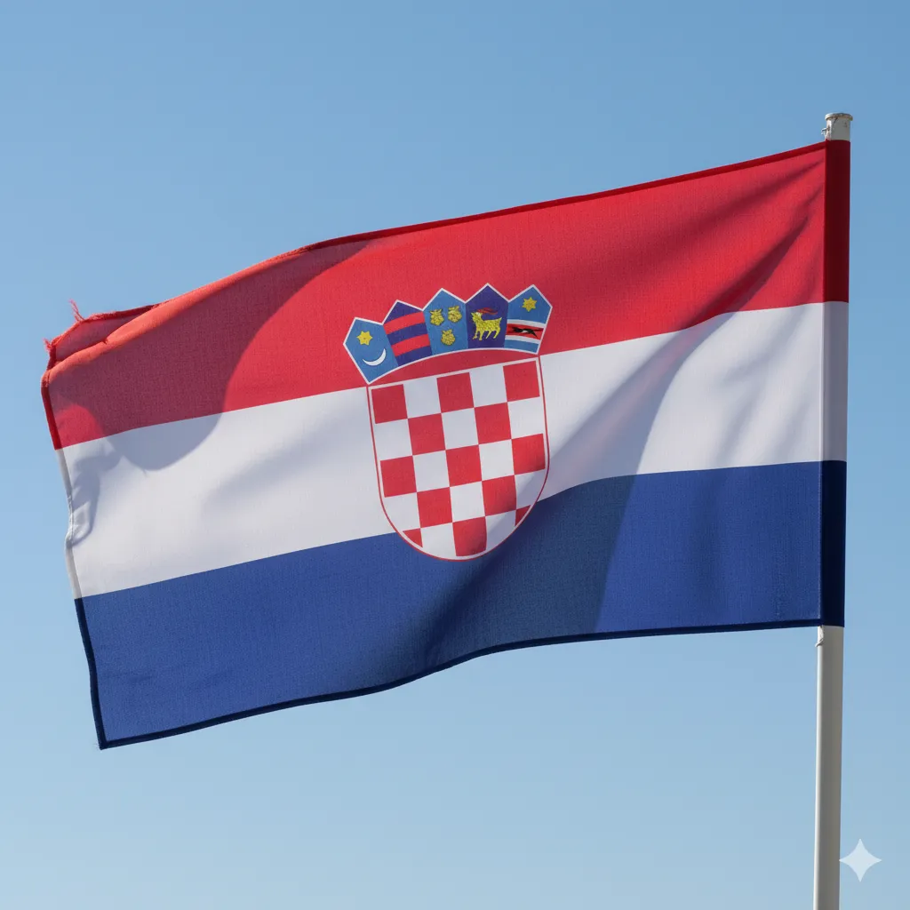

Kroatien
- Hauptstadt:
- Zagreb
- Sprache:
- Kroatisch
- Einwohner:
- ca. 4 Mio.
- Währung:
- Euro (seit 2023)
Kroatien ist berühmt für seine dalmatinische Küste mit hunderten Inseln, glasklarem Wasser und malerischen Altstädten wie Dubrovnik und Split. Neben Strand- und Segelurlauben bietet das Land Nationalparks (z. B. Plitvicer Seen) mit spektakulären Wasserfällen, gut ausgebaute Wander- und Radwege sowie eine aufstrebende Wein- und Gastronomieszene.
Sommerlich-heißes Klima an der Küste
Fähren in der Hochsaison vorbuchen